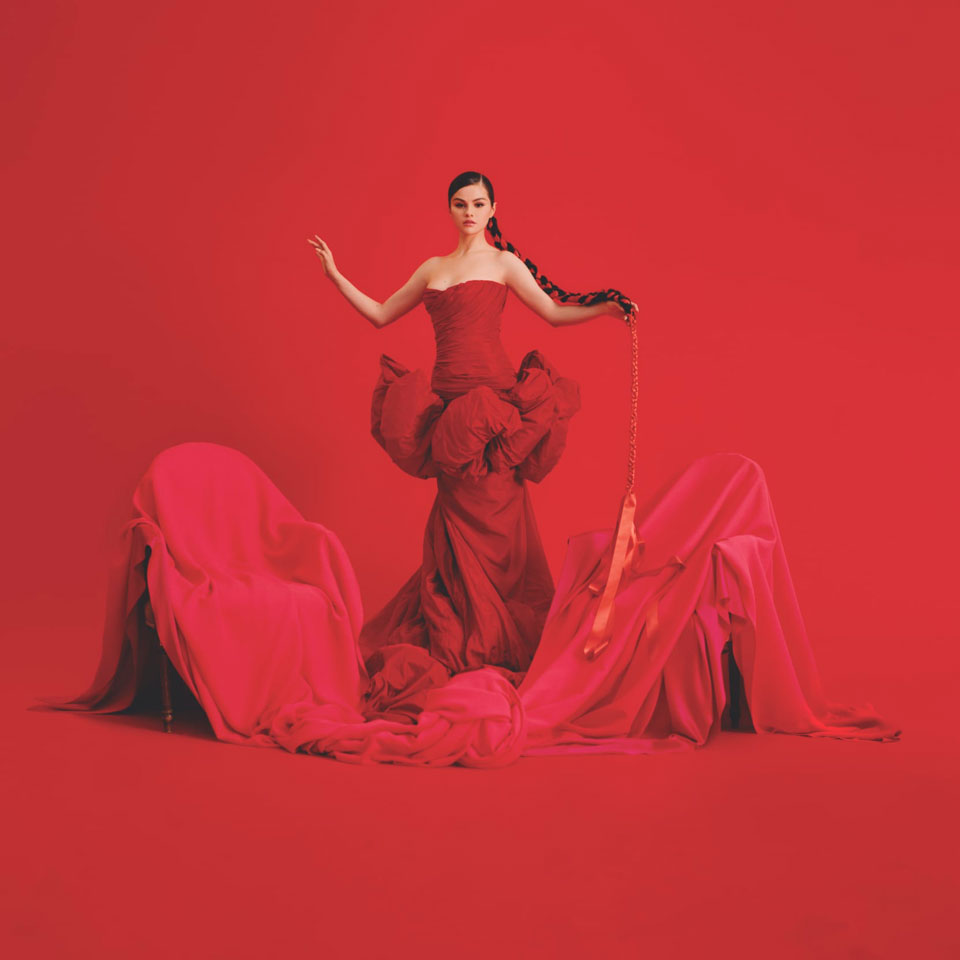

La reina de instagram
Actualmente es la segunda mas seguida con 291 millones , pero Fue la primera usuario en tener mas follower en instagram

1 Album en español
Su primer album en español , logro ser el EP de un artista femenina mas escuchado.